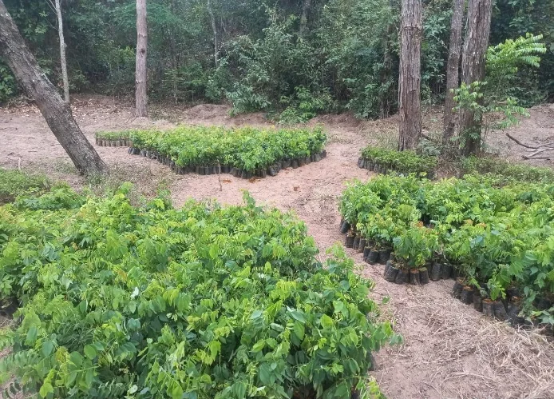

Solo fraco, pastagem degradada ou dúvida sobre correção
Análise, interpretação, conservação e planejamento conforme o objetivo produtivo ou ambiental.
Ver caminho técnico →Projetamos, apoiamos a regularização e o licenciamento quando aplicável, implantamos, executamos e monitoramos soluções em recuperação ambiental, irrigação e automação, solo, produção rural e geotecnologia.
 Solo + conservação
Solo + conservação Drone + precisão
Drone + precisão
Vegetação + restauraçãoO cliente não precisa conhecer o nome do serviço. A Ordone parte da situação observada, dos documentos disponíveis e do objetivo da área.
Análise, interpretação, conservação e planejamento conforme o objetivo produtivo ou ambiental.
Ver caminho técnico →Leitura integrada de água, relevo, cobertura, solo e comportamento da área.
Ver caminho técnico →Organização territorial, documental e ambiental antes da definição do produto técnico.
Soluções rurais →KML/KMZ, mapas temáticos, leitura espacial e rastreabilidade das intervenções.
Geoprocessamento →Diagnóstico, planejamento, implantação, manutenção e monitoramento conforme a área.
Recuperação ambiental →Leitura da obrigação, prazo, órgão, documentos, mapas e lacunas antes da resposta.
Organizar exigência →Levantamento, dimensionamento, projeto, execução e automação conforme água, solo, topografia, cultura e operação.
Irrigação e automação →Solo, água, vegetação, produtividade, conservação e regularização ambiental estão conectados. A proposta é organizar a demanda sem transformar uma recomendação de outro caso em receita universal.
Atuamos do levantamento ao comissionamento, considerando disponibilidade hídrica, vazão, pressão, topografia, solo, cultura, energia e rotina operacional.
O acervo técnico registra experimentos de campo com tratamentos comparativos para proteção e nutrição de mudas nativas do Cerrado, além de acompanhamento de irrigação e manutenção.
O conteúdo do acervo é organizado em evidência documental, interpretação técnica, conteúdo didático e ferramentas úteis para novas demandas.
A Ordone passa a funcionar também como porta de entrada para painéis públicos que ajudam a compreender queimadas, desmatamento, água, clima, seca, geologia, mineração e regularização.
Painéis do Programa Queimadas com focos ativos, risco e produtos de monitoramento.
Abrir monitor ao vivo →Consulta aos dados geográficos do PRODES e DETER, incluindo Cerrado.
Abrir TerraBrasilis →HidroWeb, telemetria hidrometeorológica e Monitor de Secas do Brasil.
Abrir HidroWeb →Mapas meteorológicos, precipitação, temperatura, avisos e estações.
Abrir INMET →Os cartões abaixo são preparados para receber atualizações automáticas das páginas oficiais. Se a coleta automática falhar, os acessos diretos aos órgãos continuam disponíveis.
Fontes oficiaisUma sequência construída com registros do próprio acervo para expressar a identidade da Ordone: natureza, solo, água, drone, campo e recuperação.
O áudio é uma paisagem sonora original, sem música comercial. O vídeo não simula resultados nem substitui registros técnicos.

A atuação técnica inclui leitura de campo, alinhamento de equipes, orientação, registro, acompanhamento e transformação de informação em decisão.
Conhecer a trajetóriaQuando o acervo comprovar a sequência, o site prioriza antes → intervenção → evolução. Quando não houver comprovação, usamos somente registros de etapas, sem fabricar “antes e depois”.


A seleção prioriza execução, método e evidência de campo.

Descreva o que está acontecendo, onde fica a área, qual o objetivo e quais documentos existem. O próximo passo é estruturado a partir dessas informações.
Começar diagnósticoO que está acontecendo.
Área, prazo e objetivo.
Mapa, foto, laudo ou documento.
Escopo técnico adequado.